30 dias de brincadeiras sem tela. Para cada dia, uma missão para ler em voz alta, uma folha para a criança e uma brincadeira com materiais que você já tem em casa, com até 10 minutos de preparo.
Quero os 30 dias · R$ 19,90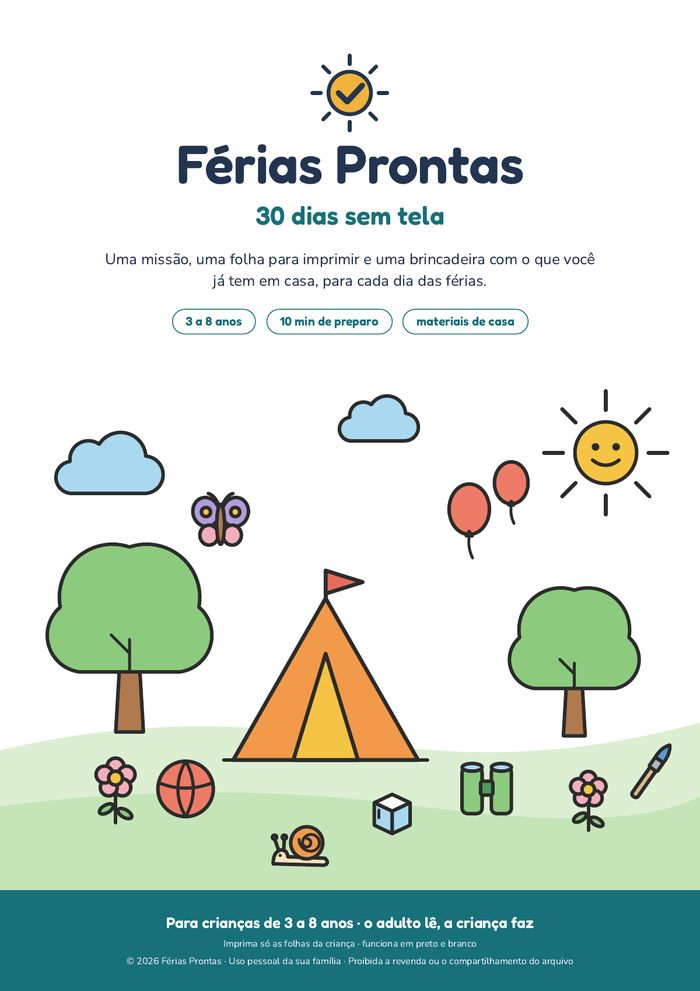
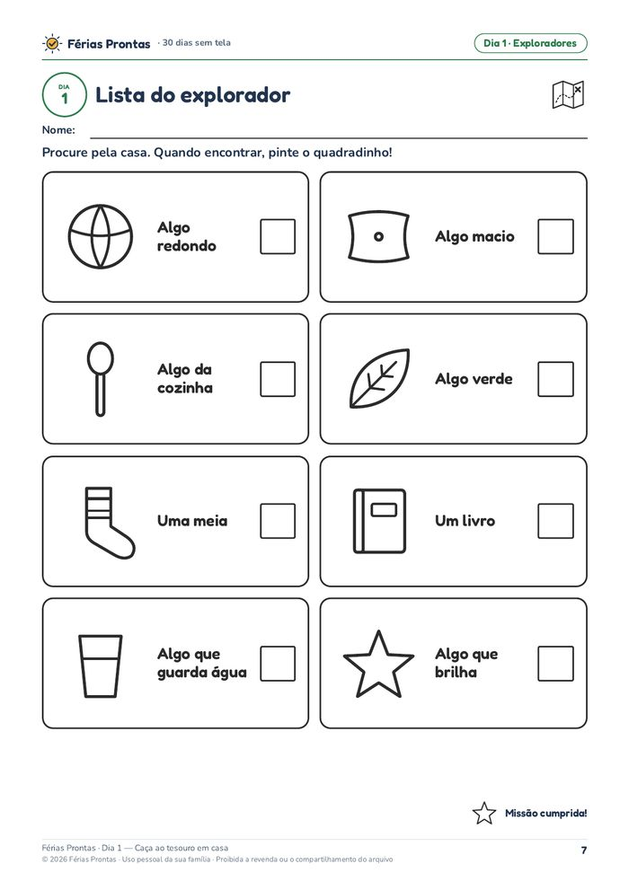
Nos primeiros dias, tudo é novidade. Depois vem o “tô entediado”, o pedido de celular ou de desenho, e alguém da casa precisa inventar uma brincadeira nova entre o trabalho, a comida e a roupa para lavar.
O Férias Prontas cuida da parte de decidir o que fazer e como fazer. Você abre o dia, lê a missão e brinca com o que já tem em casa. Sem comprar nada, sem montar nada complicado.
E tudo bem se sobrar tempo livre: um pouco de “não tenho nada para fazer” também faz parte das férias. O material traz essa regra escrita logo no começo.
Um PDF para imprimir em casa com 30 dias de brincadeiras para crianças de 3 a 8 anos. O adulto lê; a criança faz. Cada dia tem 3 partes:
Casa, quintal, janela e praça viram território de descoberta.
Criar com papel, giz, meias e imaginação.
Experimentos sem fogo, sem forno e sem faca.
Circo, olimpíadas, teatro e o ensaio para o festival.
Páginas reais do material, sem retoque. Toque nas imagens para ampliar.
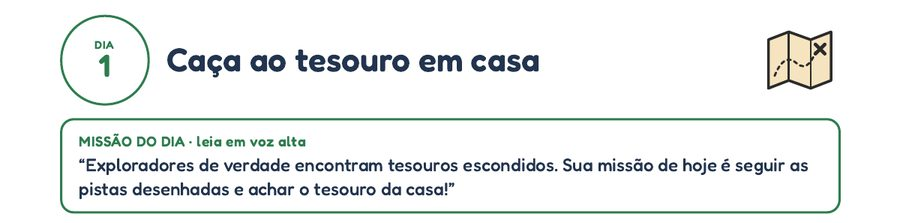
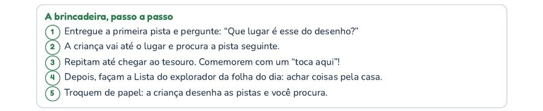
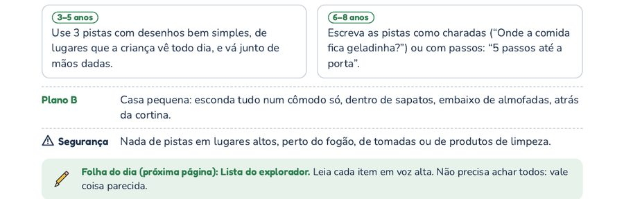
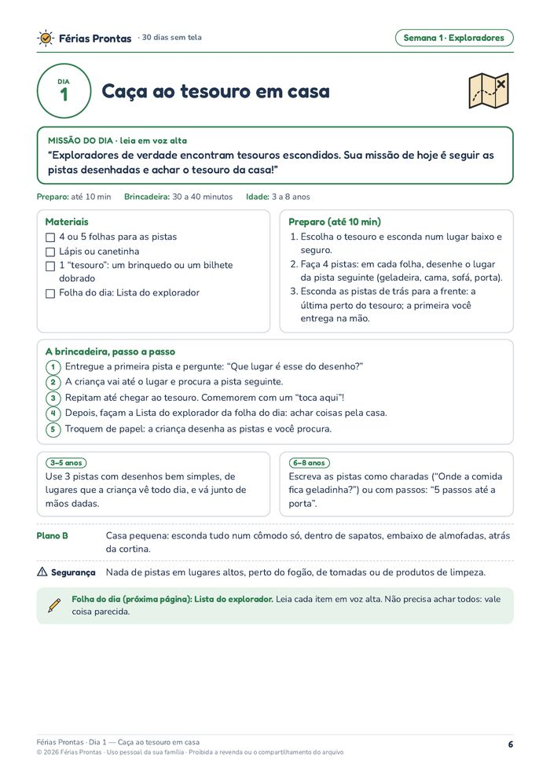
Tempos sugeridos no material. Cada criança tem o seu ritmo.
Quero os 30 dias · R$ 19,90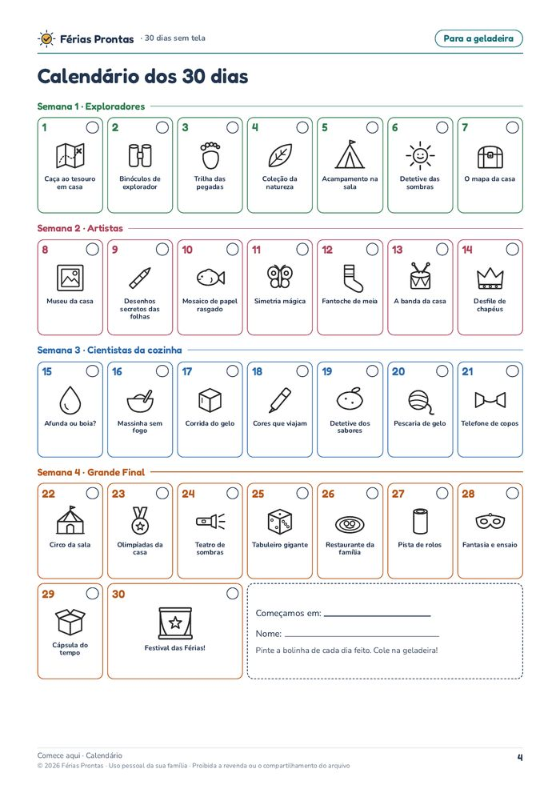
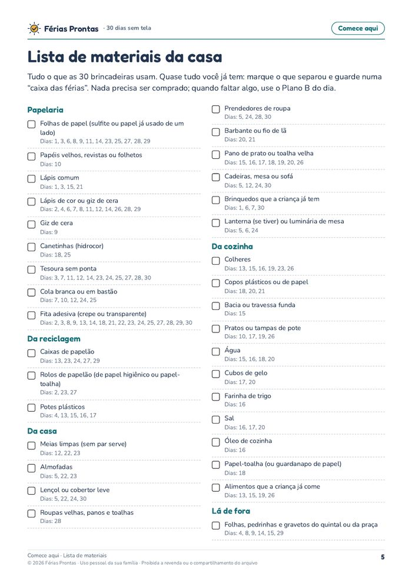
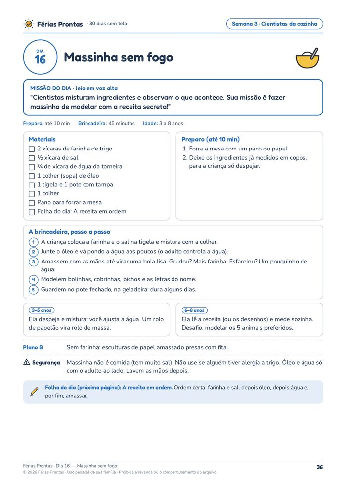
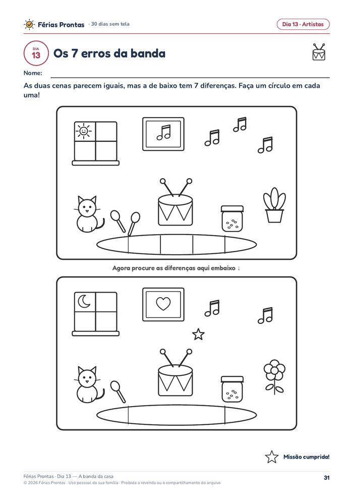
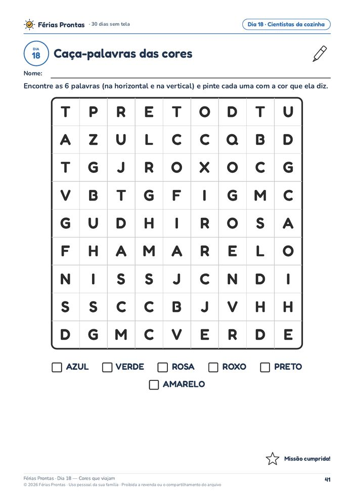
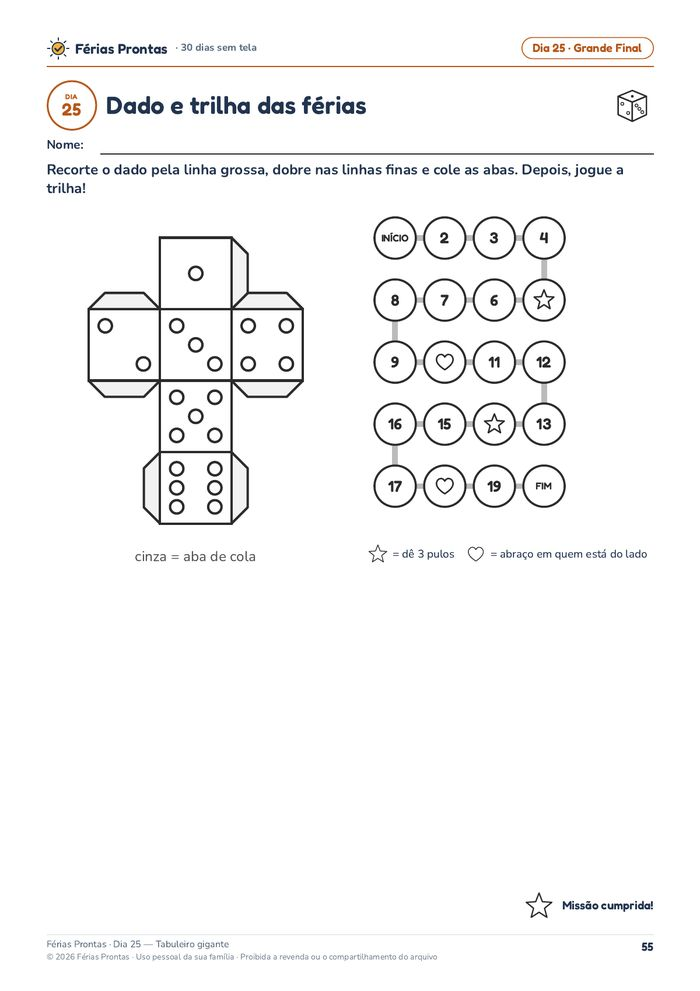
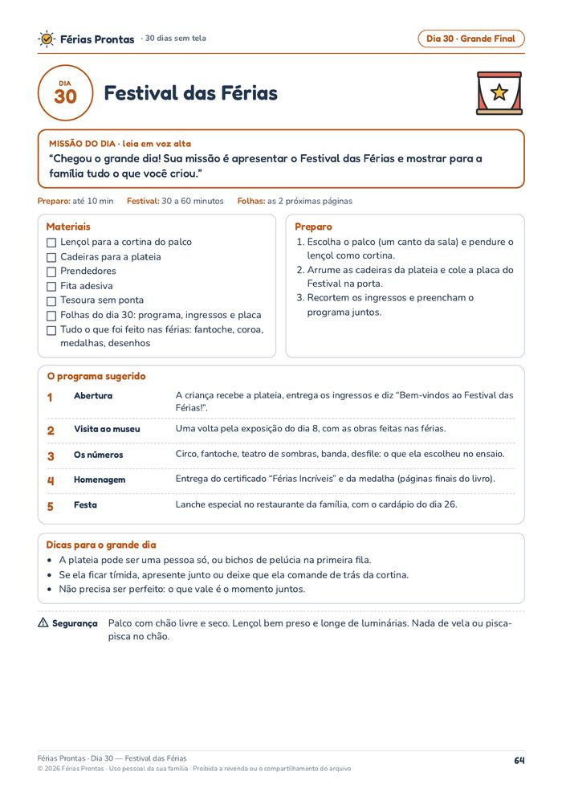
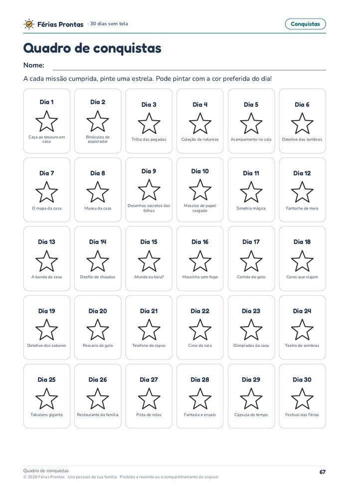
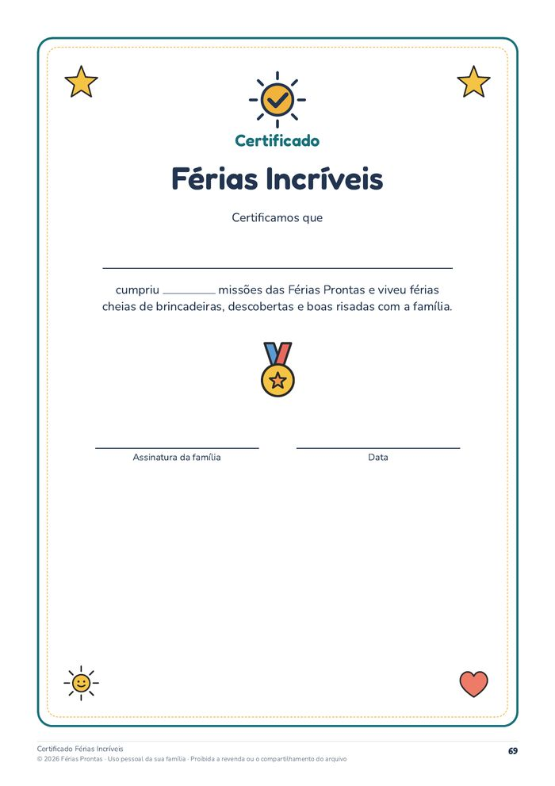
Um PDF A4 com 71 páginas. Não precisa imprimir tudo: a página do adulto pode ser lida no celular, e as páginas da criança (folhas do dia, Festival, conquistas, certificado e medalha) são 35, desenhadas em traço para gastar pouca tinta em preto e branco.
Para as horas entre uma missão e outra. São 100 cartões de brincadeiras para recortar, dobrar e colocar num pote. Bateu o “não tenho nada para fazer”? A criança tira um cartão.
Páginas reais do Pote do Tédio. Toque para ampliar.
+ R$ 12,90, só se você quiser. Ele aparece como opção na página de pagamento. Não vem incluído nos 30 dias.
Compra única, não é assinatura
Após a confirmação do pagamento, você recebe por e-mail o acesso à área de membros, onde baixa o PDF. O Pote do Tédio (+R$ 12,90) é opcional e aparece na página de pagamento.
Não. Tudo foi desenhado para funcionar em preto e branco, no modo econômico. Só a capa é bem colorida, e ela não precisa ser impressa.
Não. A página do adulto pode ser lida no celular. As páginas da criança são 35, e o material traz a lista exata delas para digitar na impressora.
De 3 a 8 anos. Cada dia tem uma versão para 3 a 5 anos e outra para 6 a 8 anos, então irmãos de idades diferentes brincam juntos.
Coisas que você já tem em casa: papel, lápis, fita, rolos de papelão, meias, almofadas, copos, bacia, água, gelo, farinha e sal. Nenhuma brincadeira usa fogo, forno ou faca. Se faltar algo, cada dia tem um Plano B.
Não. Dá para seguir do dia 1 ao 30 ou escolher pelo calendário. Pode pular e repetir.
Sim. As brincadeiras de quintal ou de praça têm um Plano B para dentro de casa ou para a janela, e as que pedem espaço têm uma versão para casa pequena.
Após a confirmação do pagamento, você recebe por e-mail o acesso à área de membros. Lá está o PDF para baixar e imprimir. Não chega nada pelo correio.
Sim, quantas vezes quiser, para as crianças da sua família. Só não é permitido revender ou compartilhar o arquivo.
Não. Ele é opcional e custa R$ 12,90 a mais. Aparece como opção na página de pagamento. Os 30 dias funcionam sem ele.
Você tem 7 dias de garantia. Peça o reembolso pela plataforma de pagamento.